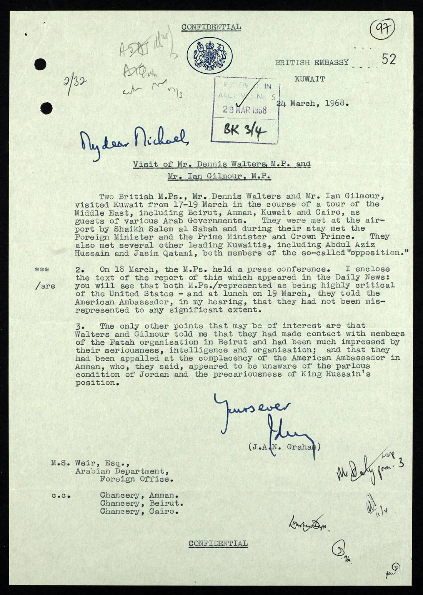

24 March 1968 · British Embassy letter on the visit of Dennis Walters MP and Ian Gilmour MP
Two British MPs meet Jassim Al-Qatami
What it is
During their Middle East tour, two members of the British Parliament visited Kuwait and met the Foreign Minister, the Prime Minister and Crown Prince, and several leading Kuwaitis, including Abdulaziz Hussain and Jasim Qatami of the opposition.
Why it matters
Jassim among the few Kuwaitis chosen for visiting British parliamentarians to meet.
Who is meant
The same Jassim Al-Qatami as the records that give his full name: Director of Police, resigned at Suez, later a nationalist member of the National Assembly.
Page copies

Original text
English translation
Others named
Sources
The National Archives, London, digitised by the Arabian Gulf Digital Archive (agda.ae). Images reproduced by permission of The National Archives, London, England.
Archive reference
- FCO 8/626 · UK
How this text was made: Typed from the archive's own text reading of the scan, corrected against the scan where the reading was garbled. … marks text left out. Arabic translation by Claude; please review.
Open in the interactive site